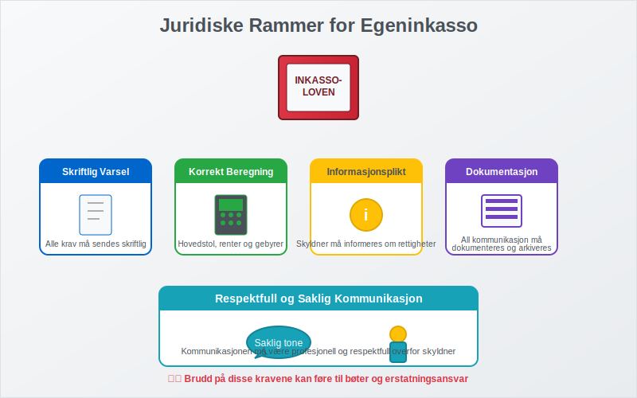
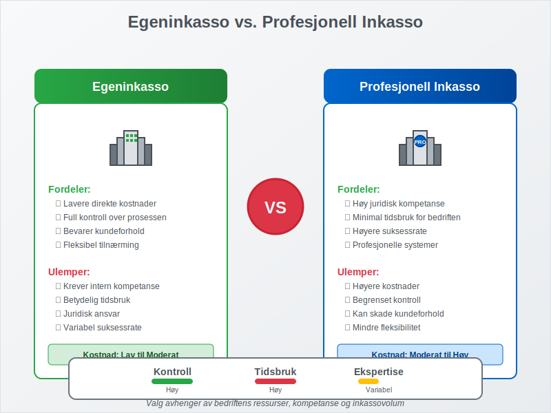
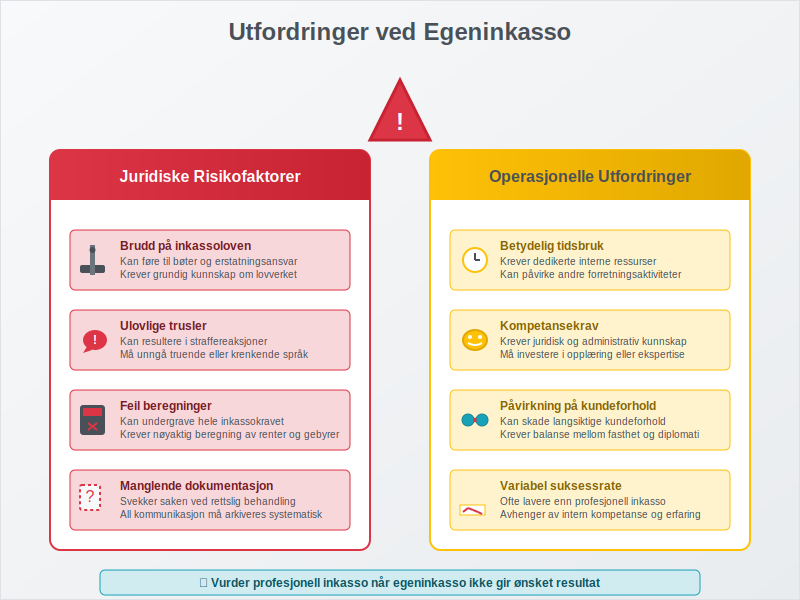

Egeninkasso er når en kreditor selv driver inkassovirksomhet for å kreve inn forfalte fordringer, i stedet for å overlate oppgaven til et profesjonelt inkassoselskap. Dette er en lovlig og ofte kostnadseffektiv metode for bedrifter som ønsker å beholde kontrollen over kundeoppfølging og inkassoprosessen. Egeninkasso krever imidlertid grundig kunnskap om juridiske rammer og korrekte prosedyrer.
Seksjon 1: Juridiske Rammer for Egeninkasso
Egeninkasso er regulert av inkassoloven og forbrukerkjøpsloven, og må følge strenge regler for å være lovlig. Bedrifter som driver egeninkasso må overholde de samme kravene som profesjonelle inkassoselskaper når det gjelder kommunikasjon med skyldnere.

Lovpålagte Krav til Egeninkasso
For at egeninkasso skal være lovlig, må følgende krav oppfylles:
- Skriftlig varsel: Alle inkassokrav må sendes skriftlig med tydelig informasjon
- Korrekt beregning: Hovedstol, renter og gebyrer må være korrekt beregnet
- Informasjonsplikt: Skyldner må informeres om sine rettigheter
- Dokumentasjon: All kommunikasjon må dokumenteres og arkiveres
- Respektfull tone: Kommunikasjonen må være saklig og respektfull
Seksjon 2: Egeninkasso vs. Profesjonell Inkasso
Før en bedrift bestemmer seg for egeninkasso, er det viktig å forstå forskjellene mellom egeninkasso og profesjonell inkasso. Valget påvirker både kostnader, tidsbruk og suksessrate.

Sammenligning av Inkassometoder
| Aspekt | Egeninkasso | Profesjonell Inkasso |
|---|---|---|
| Kostnader | Lavere direkte kostnader | Høyere gebyrer, men ingen internkostnader |
| Tidsbruk | Krever betydelig intern ressurs | Minimal tidsbruk for bedriften |
| Juridisk ekspertise | Krever intern kompetanse | Profesjonell juridisk kompetanse |
| Suksessrate | Varierer med intern kompetanse | Generelt høyere suksessrate |
| Kontroll | Full kontroll over prosessen | Begrenset kontroll |
| Kundeforhold | Kan påvirke kundeforhold direkte | Buffer mellom bedrift og kunde |
Når Bør Du Velge Egeninkasso?
Egeninkasso er mest hensiktsmessig når:
- Bedriften har juridisk kompetanse internt
- Inkassovolumene er moderate og håndterbare
- Det er viktig å bevare kundeforholdet
- Bedriften ønsker full kontroll over prosessen
- Kostnadskontroll er kritisk
Seksjon 3: Prosedyrer for Egeninkasso
En systematisk tilnærming til egeninkasso øker sannsynligheten for vellykket innkreving og sikrer overholdelse av juridiske krav. Prosessen starter vanligvis etter at normale betalingsoppfordringer ikke har ført til betaling.
Trinn-for-Trinn Egeninkasso Prosess
Trinn 1: Forberedelse og Dokumentasjon
Før egeninkasso starter, må bedriften sikre at:
- Den opprinnelige fakturaen er korrekt og juridisk bindende
- Alle betalingsoppfordringer er sendt og dokumentert
- Skyldnerens kontaktinformasjon er oppdatert og korrekt
- Alle relevante avtaler og dokumenter er tilgjengelige
Trinn 2: Første Inkassokrav
Det første inkassokravet må inneholde:
- Tydelig identifikasjon av kreditor og skyldner
- Detaljert oversikt over hovedstol, renter og gebyrer
- Betalingsfrist (minimum 14 dager)
- Informasjon om konsekvenser ved manglende betaling
- Kontaktinformasjon for henvendelser
Trinn 3: Oppfølging og Eskalering
Hvis første inkassokrav ikke fører til betaling:
- Andre inkassokrav med strengere tone
- Telefonisk kontakt for å avklare situasjonen
- Forhandling om betalingsordning hvis aktuelt
- Vurdering av videre rettslige skritt
Beregning av Inkassokostnader
Ved egeninkasso kan bedriften kreve de samme gebyrene som profesjonelle inkassoselskaper:
| Type Gebyr | Beløp | Hjemmel |
|---|---|---|
| Første inkassokrav | Inntil kr 200 | Inkassoforskriften § 4 |
| Andre inkassokrav | Inntil kr 400 | Inkassoforskriften § 4 |
| Forsinkelsesrenter | 8,5% p.a. (2024) | Forsinkelsesrenteloven |
| Saksomkostninger | Faktiske kostnader | Tvisteloven |
For en detaljert gjennomgang av hvordan inkassosalær beregnes og reguleres, inkludert prosentbaserte honorarer og bransjespesifikke satser, se vår omfattende guide.
Seksjon 4: Regnskapsføring av Egeninkasso
Korrekt regnskapsføring av egeninkassoaktiviteter er essensielt for å opprettholde oversikt over fordringer og kostnader. Dette påvirker både driftsresultatet og betalingsevnen.
Kontering av Inkassoaktiviteter
Inkassokostnader og Gebyrer
Når bedriften sender inkassokrav, skal gebyrene konteres som:
- Debet: Kundefordringer (økning av fordring)
- Kredit: Andre driftsinntekter (gebyr som inntekt)
Forsinkelsesrenter
Påløpte forsinkelsesrenter konteres som:
- Debet: Kundefordringer
- Kredit: Renteinntekter
Tap på Fordringer
Hvis inkasso ikke lykkes, må fordringen eventuelt avskrives som tap:
- Debet: Tap på fordringer
- Kredit: Kundefordringer
Seksjon 5: Utfordringer og Risikofaktorer
Egeninkasso medfører flere utfordringer som bedrifter må være oppmerksomme på for å unngå juridiske problemer og ineffektiv ressursbruk.

Vanlige Fallgruver ved Egeninkasso
Juridiske Risikofaktorer
- Brudd på inkassoloven: Kan føre til bøter og erstatningsansvar
- Ulovlig trusler: Kan resultere i straffereaksjoner
- Feil beregninger: Kan undergrave hele inkassokravet
- Manglende dokumentasjon: Svekker saken ved eventuell rettslig behandling
Operasjonelle Utfordringer
- Tidsbruk: Egeninkasso krever betydelige interne ressurser
- Kompetansekrav: Krever juridisk og administrativ kompetanse
- Kundeforhold: Kan skade langsiktige kundeforhold
- Suksessrate: Ofte lavere enn profesjonell inkasso
Når Bør Du Overlate til Profesjonell Inkasso?
Det er tid å vurdere profesjonell inkasso når:
- Egeninkasso ikke gir resultater etter 2-3 forsøk
- Skyldner bestrider kravet og det kreves juridisk ekspertise
- Beløpet er høyt og rettferdigheter kostnadene
- Bedriften mangler ressurser til oppfølging
- Kundeforholdet allerede er ødelagt
Seksjon 6: Digitale Verktøy for Egeninkasso
Moderne teknologi kan effektivisere egeninkassoprosessen betydelig. Mange regnskapssystemer og CRM-løsninger tilbyr integrerte funksjoner for inkassohåndtering.
Automatisering av Inkassoprosessen
Systemintegrasjon
Effektiv egeninkasso drar nytte av integrasjon mellom:
- Regnskapssystem: For automatisk oppfølging av forfalte fakturaer
- CRM-system: For kundehistorikk og kommunikasjonssporing
- E-postautomatisering: For systematisk utsendelse av inkassokrav
- Betalingsløsninger: For enkel betaling direkte fra inkassokrav
Digitale Inkassoverktøy
Moderne bedrifter kan benytte:
- Automatiske påminnelser basert på forfallsdatoer
- Malbaserte inkassokrav som sikrer juridisk korrekthet
- Sporingsverktøy for å følge opp kommunikasjon
- Rapporteringsverktøy for å analysere inkassoeffektivitet
Seksjon 7: Beste Praksis for Egeninkasso
Suksessful egeninkasso krever en balansert tilnærming som kombinerer juridisk korrekthet med praktisk effektivitet og bevaring av kundeforhold.
Kommunikasjonsstrategi
Profesjonell og Respektfull Tone
- Saklig språk: Unngå emosjonelle eller truende formuleringer
- Tydelig informasjon: Presenter alle fakta klart og strukturert
- Løsningsorientert: Tilby betalingsordninger når det er hensiktsmessig
- Dokumentasjon: Arkiver all kommunikasjon systematisk
Timing og Oppfølging
- Konsekvent oppfølging: Følg opp systematisk etter fastsatte frister
- Fleksibilitet: Vær åpen for dialog og alternative løsninger
- Eskalering: Ha en klar plan for når saken skal overføres til profesjonell inkasso
Organisatoriske Forutsetninger
For å drive effektiv egeninkasso bør bedriften ha:
- Dedikerte ressurser: Personer med ansvar for inkassooppfølging
- Juridisk kompetanse: Intern eller ekstern juridisk rådgivning
- Systemer og rutiner: Etablerte prosedyrer og verktøy
- Ledelsesforankring: Støtte fra ledelsen for inkassoaktiviteter
Seksjon 8: Økonomiske Konsekvenser av Egeninkasso
Egeninkasso påvirker bedriftens økonomi på flere måter, både direkte gjennom kostnader og indirekte gjennom påvirkning på kontantstrøm og kundeforhold.
Kostnads-Nytte Analyse
Direkte Kostnader ved Egeninkasso
- Personalkostnader: Tid brukt på inkassoaktiviteter
- Systemkostnader: Investering i inkassoverktøy og systemer
- Administrasjonskostnader: Porto, telefon og andre kommunikasjonskostnader
- Juridiske kostnader: Rådgivning og eventuell rettslig behandling
Potensielle Inntekter
- Inkassogebyrer: Lovlige gebyrer som kan kreves fra skyldner
- Forsinkelsesrenter: Renter på forfalte beløp
- Innkrevde fordringer: Hovedstolen som ellers kunne blitt tapt
Påvirkning på Kontantstrøm
Effektiv egeninkasso kan forbedre bedriftens betalingsevne ved å:
- Redusere kundefordringer gjennom raskere innkreving
- Forbedre betalingsmoral hos eksisterende kunder
- Minimere tap på fordringer gjennom proaktiv oppfølging
- Øke forutsigbarhet i kontantstrømmen
Konklusjon
Egeninkasso kan være en kostnadseffektiv og kontrollerbar metode for å håndtere forfalte fordringer, men krever grundig planlegging, juridisk kunnskap og systematisk gjennomføring. Bedrifter som vurderer egeninkasso må veie fordelene mot ulempene og sikre at de har nødvendige ressurser og kompetanse.
Nøkkelfaktorer for suksessful egeninkasso:
- Juridisk etterlevelse: Følg alle lovkrav og forskrifter nøye
- Systematisk tilnærming: Etabler klare rutiner og prosedyrer
- Profesjonell kommunikasjon: Oppretthold respektfull og saklig tone
- Teknologisk støtte: Benytt digitale verktøy for effektivisering
- Kontinuerlig evaluering: Vurder regelmessig om egeninkasso er den beste løsningen
For bedrifter som ikke har ressurser eller kompetanse til egeninkasso, kan det være mer hensiktsmessig å benytte profesjonelle inkassotjenester. Det viktigste er å ha en proaktiv tilnærming til kundeoppfølging og inkassohåndtering for å minimere tap på fordringer og opprettholde god betalingsevne.